I turn customer research into positioning, launch plans and campaigns that move numbers. MS Marketing (Analytics) at USC Marshall.
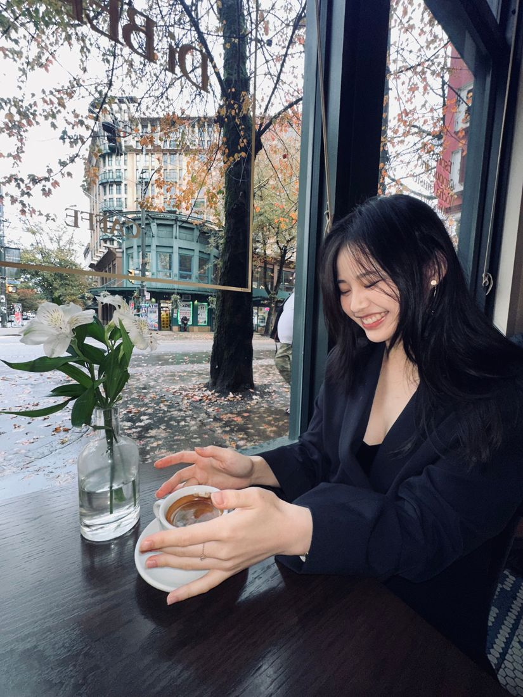
I work where research meets the market: finding out what customers actually want, deciding where a brand should stand, and building the plan that gets it there.
My background mixes science and business. I studied Food, Nutrition & Health with a Commerce minor at UBC, advised product launches across four markets at Daiya Foods, and led a rebrand for a Vancouver tea shop. Five years of running bilingual channels on Xiaohongshu and Douyin taught me how audiences in North America and China decide what deserves their attention.
A fintech launch at USC, a small-business rebrand in Vancouver, and audience strategy tested on my own channels.
Fluo is a money app for socially active college students. For the USC Marshall MS Marketing Case Competition, our team of five had two weeks to build its launch strategy: research, positioning, product, business model and go-to-market.
We lost a lot of sleep, and complained about it in the group chat every night. We kept going anyway, and the plan made the semi-finals.
My part: the business model, the roadmap and the launch recommendation, plus a working website demo of the product.
Open the full website demo ↗Budgeting apps ask students to cut back. What students wanted was permission: to know what they could spend this weekend without guilt.
For socially active students, Fluo is the only money companion that gives responsible spending permissions, so they can enjoy college now and still reach their goals.
A student's monthMatcha, boba, lunch, fitness and a Target run, paid with FluoWallet at partner merchants.
Merchants pay 10%Cheaper than ads, and they only pay for real student sales.
Later · Fluo+Bigger squads, custom stash rules, detailed analytics, more reward drops.
Founding membersClub leaders, Greek life, international student leaders, micro-creators
Partner merchantsMatcha, boba, bowls and studios near campus, 10% on Fluo sales
Financial credibility proofA named bank partner or FDIC coverage, because 72% of students worry about privacy
Target funnel from the pitch, with each repeat user's referrals feeding the next round of sign-ups.
Vancouver's tea market is crowded, and Nü Tea looked like everyone else. As its Marketing & Branding Lead in 2025, I ran a brand audit and segmented its customers, then repositioned the shop around what set it apart: fresh, clean ingredients from trusted local suppliers.
I briefed international designers on the new identity, built a seasonal promotion calendar from the segmentation, and ran bilingual campaigns on Instagram and Xiaohongshu for the key segments.
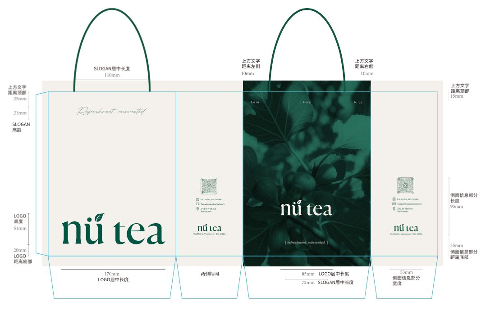
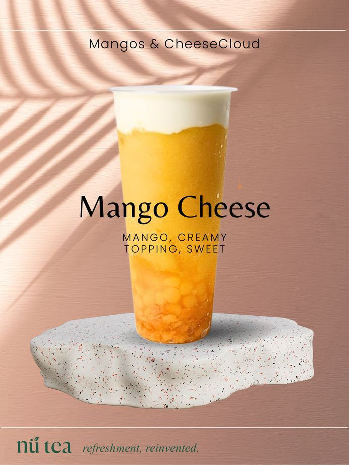
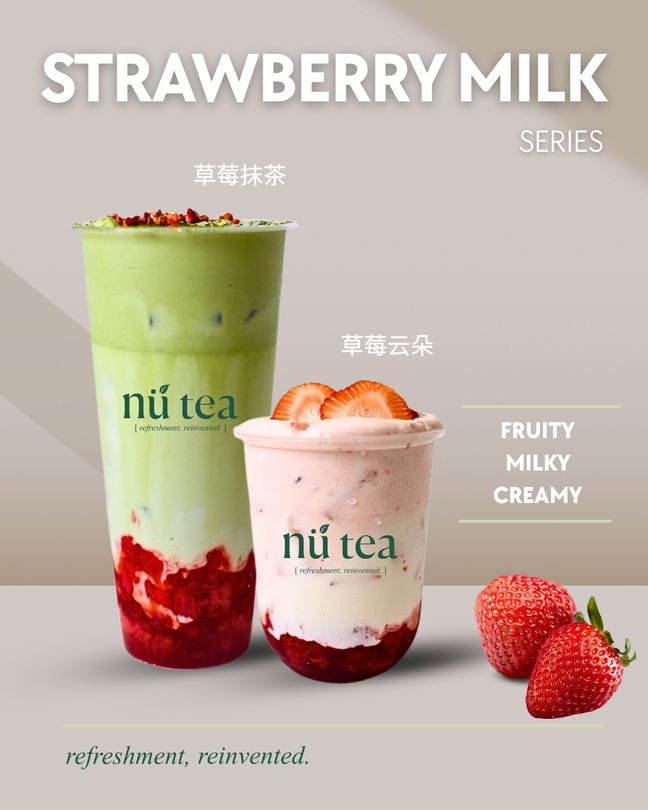
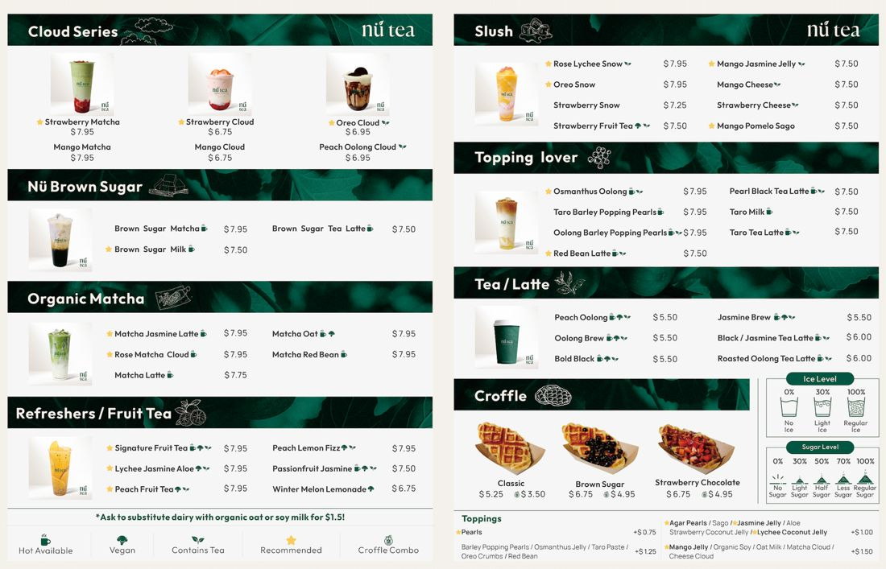
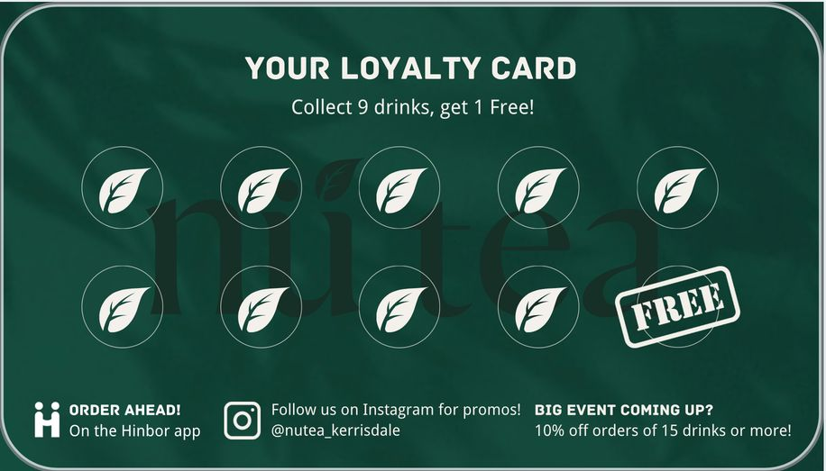
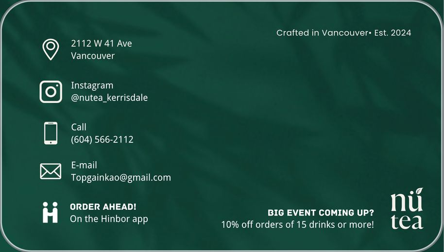
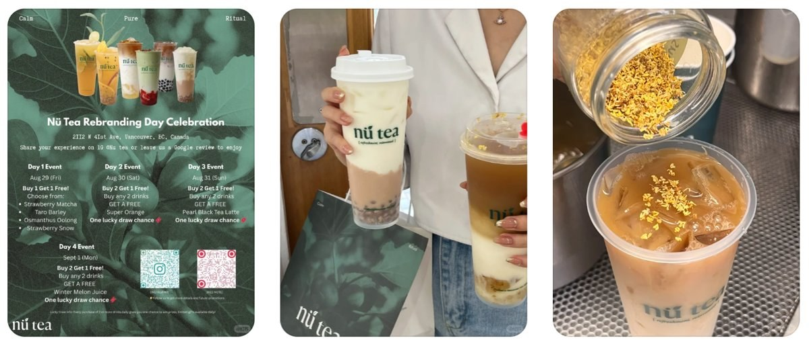
Since 2020 I've run bilingual channels on Douyin and Xiaohongshu as Eva爱喝美式, and I use them as a lab. Each post tests a hook, a format or a segment, and the analytics show what earns attention with Gen Z audiences in China and North America.
Relatable student stories travel furthest on Douyin, where one video passed 12 million views. On Xiaohongshu, practical city guides and restaurant reviews get saved and shared, and that audience has brought in 30+ brand partnerships.
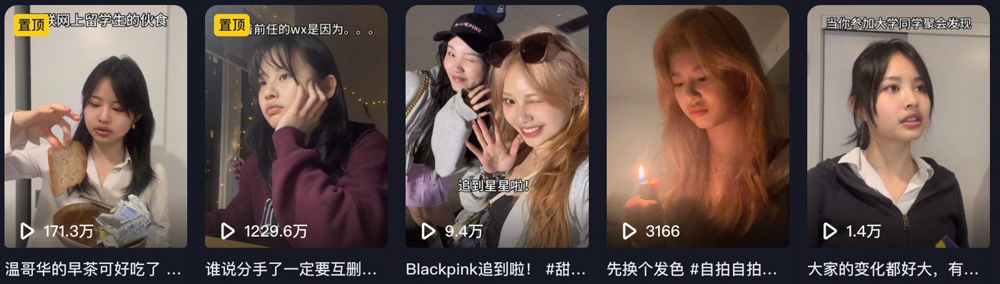
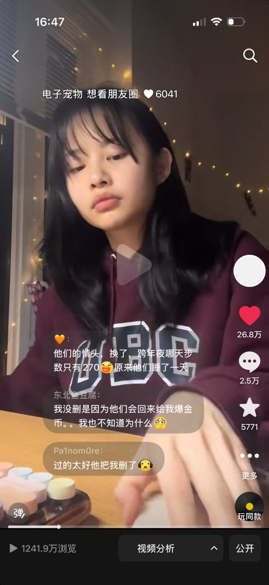
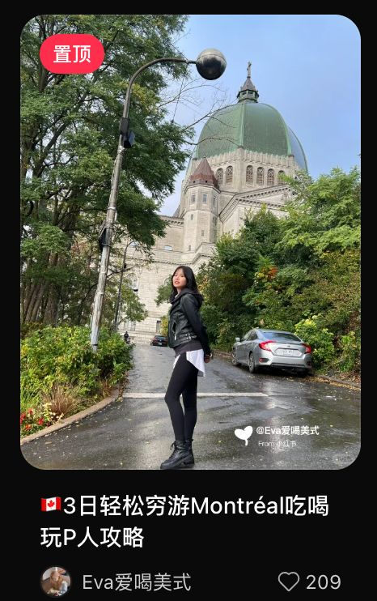
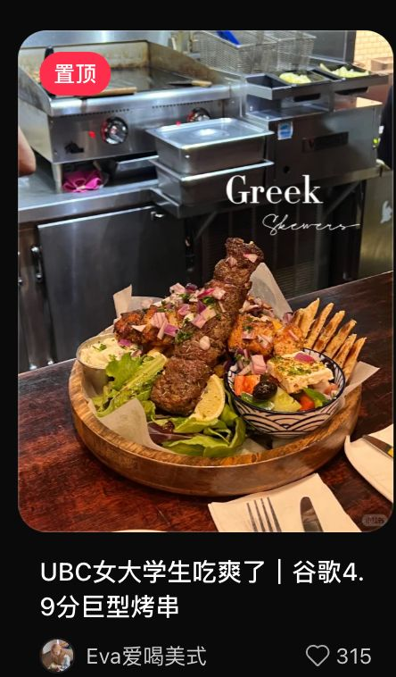
As a Business Research Assistant at UBC Sauder, I recruit and interview local small business owners for a grounded-theory study of family business succession. I also designed the AI transcription pipeline the team now uses.
The findings are being written up as a Harvard Business case study.
VP, Student Advising Committee. Marketing Case Competition semi-finalist (Fluo).
Family business succession study, being written up as a Harvard Business case study.
Advised product launches across Canada, the U.S., the EU and Southeast Asia. Automated a 50,000+ data point allergen and certification database, cutting SKU review time 3x.
Survey design, in-depth interviews, regression modeling, thematic analysis, data visualization. Python, Stata, Excel, Qualtrics, NVivo
HubSpot, Salesforce, Google Analytics, Google Trends, Figma, Canva
Google Digital Marketing & E-commerce, PwC Management Consulting simulation, LVMH Insider, Storytelling for Digital Marketing (Santander)
Most of what I love comes down to exploring: new scents, new flavours, new places.
But at heart, I'm Wuhanese.And deeply devoted to 热干面 (reganmian): hot dry noodles coated in an equally dry sesame paste, born on the Hankou docks in the 1930s as a quick, filling breakfast for dockworkers.
Open to brand strategy, marketing and consumer insights roles.
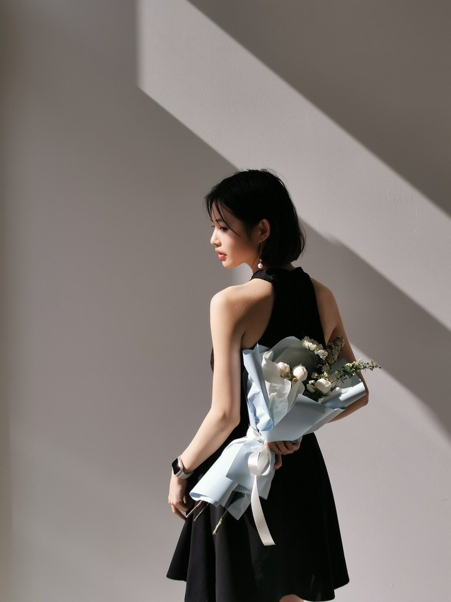